A research project led by Jacob Saindon (PhD candidate, University of Kentucky). Email me to participate!
ad by Flatart from Noun Project (CC BY 3.0)
This project examines the relationship between the advertising industry, media technologies, and the attention economy. I take a geographic perspective to the attention economy, investigating how understandings of attention are bound up with particular spatial arrangements of advertisements and consumers. I look at historical advertising media and spaces (including print, broadcast, and outdoor advertising) and their relationships with contemporary digital advertising platforms and professional practices.
As part of the project, I am seeking to interview advertising/marketing professionals about their experiences with and knowledge of digital tools and technologies. Potential participants must be at least 18 years of age and have several years of experience working in digital advertising/marketing, at minimum. I am particularly interested in speaking to professionals with digital media buying experience. Read more about the interviews here:
If you are interested in participating in the project, please email me at jsaindon@uky.edu. I look forward to hearing from you!